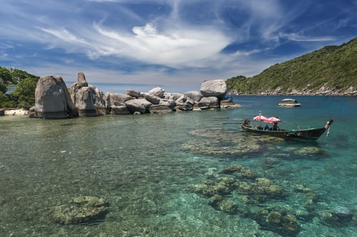
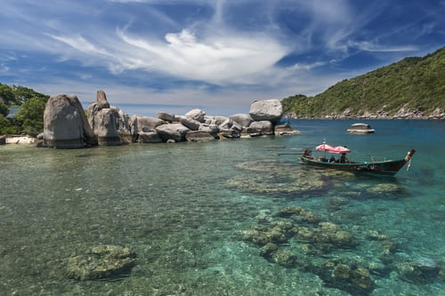
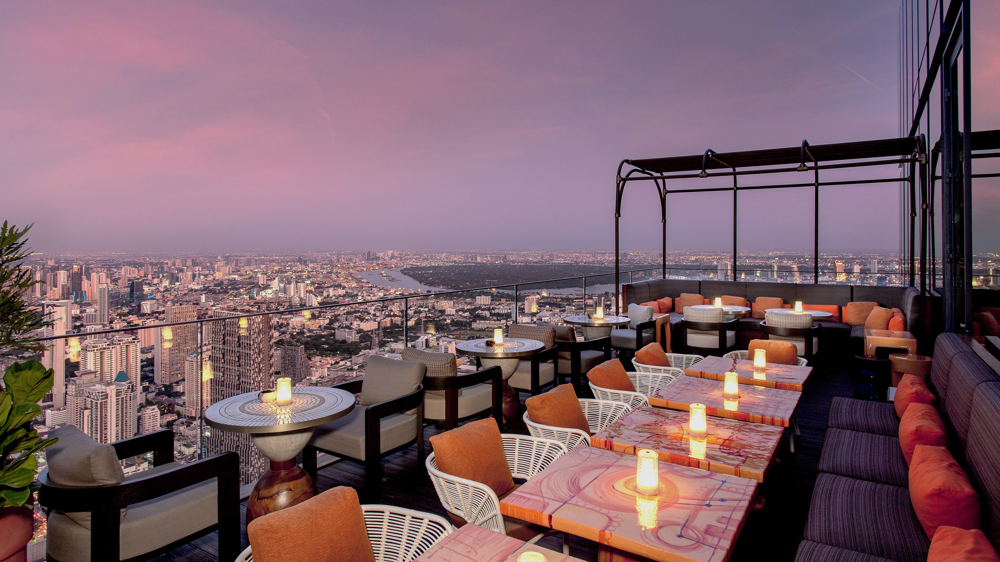
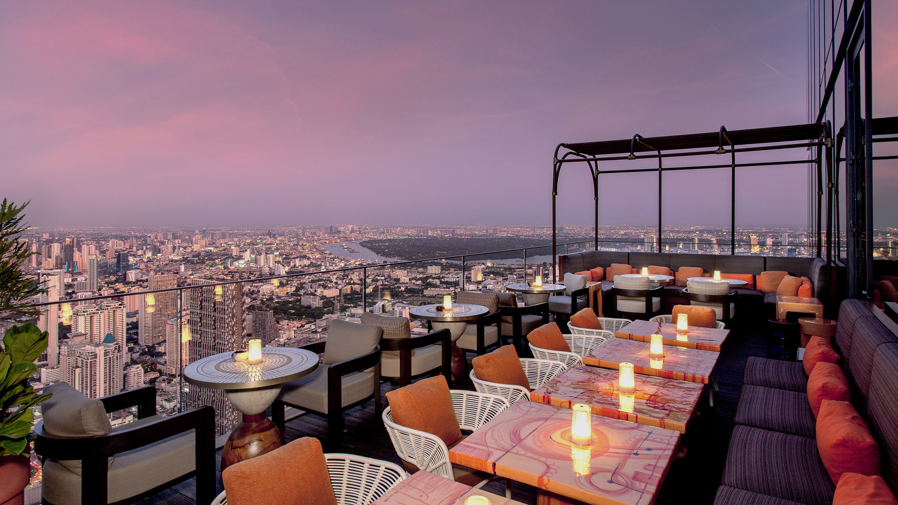

 

ဒီကျွန်းလေးကိုတော့ Koh Samui လို့ခေါ်ပြီး မြန်မာလို ဆိုရင်တော့ စမွေလို့ အသံထွက်ပါတယ်.. ကော့ဆိုတာကတော့ ထိုင်းလို ကျွန်းကိုဆိုလိုတာပါ.. ထိုင်းနိုင်ငံတောင်ပိုင်း မှာ တည်ရှိပြီး ထိုင်းရဲ့ တတိယ အကြီးဆုံး ကျွန်းဖြစ်ပါတယ်.. သူဘေးနားမှာ ပါတီ ကျွန်းလို့ နာမည်ကြီး တဲ့ Koh Phangan နဲ့ လိပ်ကျွန်းလို့ ခေါ်တဲ့ သိပ်လှတဲ့ Koh Tao ကျွန်းရှိပါတယ်..
ကော့စမွေက ထိုင်းနိုင်ငံ တခြားနေရာတွေ .. ဖူးခက်စတဲ့ ကျွန်းတွေနဲ့ ယှဉ်ရင်ထူးဆန်းတယ်လို့ပြောလို့ ရတဲ့ ရာသီဥတုကို ပိုင်ဆိုင်ထားပါတယ်.. ဒါကြောင့်သွားမယ်ဆိုရင်သတိထားဖို့လိုပါမယ်..သူ့ရဲ့ မိုးရာသီဟာ အောက်တိုဘာ လလယ်လောက်ကနေ ဒီဇင်ဘာလဆန်းအထိဖြစ်လို့ပါပဲ.. နို၀င်ဘာလကတော့ မိုးအများဆုံးလ ဖြစ်ပြီး သွားမယ်ဆိုရင်တော့ အဲ့ဒီလကို ရှောင်ပြီးသွားတာ အကောင်းဆုံးပါပဲ.. သူ့ဘေးနားက day trip သွားလည်ိနိုင်တဲ့ ကျွန်းသေးလေး တွေကလဲ အဲ့ဒီ အချိန်ဆို ပိတ်ပါတယ်.. ကျန်တဲ့ အချိန်တွေကတော့ နေရောင်ခြည်ပူနွေးပြီး သွားလာလို့ကောင်းပါတယ်.
ထိုင်းနိုင်ငံရဲ့ တတိယအကြီးဆုံး ကျွန်းဆိုပေမယ့် အဝေးဆုံးနေရာ ကိုမှ တစ်နာရီလောက်မောင်းရတာပါ… နောက်ပြီး ဒီကျွန်းဟာ Luxury Island ဖြစ်လို့ အဲဒီကိုရောက်ရင် 5 star beach front resort တွေမှာနေဖို့ပဲ အကြံပေးချင်တယ် ..သိပ်ကို သက်တောင့်သက်သာဖြစ်ပြီး ကိုယ့်စိတ်ကိုပါ အပြည့်အ၀ relax လုပ်နိုင်လို့ပါ Celes Beachfront Resort ဆို infinity pool ရှိတဲ့အပြင်ကို .. glass တွေနဲ့ပါ ရေကူးကန်ကိုလုပ်ထားတာ.. သူက အခုမှ အသစ်ဖွင့်ထားတာ.. တစ်ညကို 170 $ လောက်ပဲရှိတယ်..
ကျွန်းရဲ့ အဓိကစည်ကားတဲ့ နေရာကတော့ Chaweng လို့ခေါ်တဲ့နေရာပါ..တော်တော်များများလဲ ဒီမှာနေကြပြီး စည်လဲစည်တယ်.. ကမ်းခြေလဲလှတယ်..Night Life တွေ..shopping တွေရှိပါတယ်..လူငယ်တွေပဲဆိုရင်တော့ ဒီနေရာက အကောင်းဆုံးပါပဲ..သူ့နေရာမှာလဲ 5 star resort တွေ၇ှိလို့ အဲ့ဒီနေရာလေးလဲ ကောင်းပါတယ်။။
မဂဇင်းတွေထဲက celebrity တွေလိုမျိုးပဲ Luxurious life ကိုခံစားကြည့်ပါလို့ပဲပြောချင်တယ် ကျွန်းရဲ့ လျှောက်လည်ရမယ့်နေရာတွေကလဲ တခြား ကျွန်းတွေလောက် မဟုတ်ဘူးလို့ပဲ အပွင့်လင်းဆုံး ပြောပြချင်ပါတယ်
အဓိက ကော့စမွေ ရဲ့ သွားစရာနေရာတွေက ဓါတ်ဖမ်းလို့ သိပ်ကောင်းတဲ့ အပြင် chill လို့သိပ်ကောင်းတဲ့ bar တွေ နဲ့ restaurant တွေပဲ ရူခင်းတွေက သိပ်လှပြီး အရောက်တောက်တောက် ဂါ၀န်လေးတွေနဲ့ နေရောင်ခြည်တွေ ကြားမှာ သိပ်လှနေမှာ အသေအချာပဲ ညဘက်ဆိုရင်တော့ Chaweng ဘက်မှာ Nightlife က တော်တော်စည်တယ် ကမ်းခြေက မီးကစားပြတဲ့ဘားတွေက လေတဖြူးဖြူးကြားမှာ မိုက်လွန်းတယ် နာမည်ကြီးတာကတော့ Ark Bar ပဲ တော်တော်လေးကို မိုက်တယ်
ကျွန်းတွေသွားတဲ့ Package တွေကတော့ ဟိုတယ်အထိ ကားတွေလာကြိုပေးလို့ အေးဆေးဆိုပေမယ့် ဟိုဒီသွားဖို့ကတော့ ကားလိုပါတယ် Chaweng မှာနေရင် ကားငှားရလွယ်ပေမယ့် တခြားနေရာတွေမှာတော့ Taxi တော်တော်ရှားပါတယ် လိုင်းကားလေးတွေ ကျွန်းကို ပတ်ပြီးပြေးနေပေမယ့် တယောက် ဘတ် 100 ဆိုတော့ စျေးကြီးတယ်လို့ပဲပြောရမယ် ဒါဆိုရင်တော့ ကားစီးလုံး သို့ နှစ်ယောက်ထဲဆို ဆိုင်ကယ်ငှားထားတာ ပိုအဆင်ပြေပါတယ် မြန်မာပြည်ရဲ့ ကားမောင်းလိုင်စင်ရယ် passport ရယ် ပြရင်ကို အလွယ်တကူ ငှားလို့ရပါတယ် ကျွန်းမှာ ကားမောင်းရတာ သိပ်မခက်ခဲပါဘူး GPS လေးကြည့်ပြီးမောင်းလို့ရတယ်
ဒီလောက်ဆိုရင်တော့ ထိုင်းနိုင်ငံတောင်ပိုင်းရဲ့ သိပ်လှတဲ့ ဇိမ်ခံကျွန်းလေးကို သွားလည်လို့ရလောက်ပြီပေါ့ luxury life ကိုခံစားနိုင်ပေမယ့် စျေးလဲသိပ်မကြီးပဲ တယောက် 700$ ကျော်လောက်ဆို လောက်ပါတယ် ဓါတ်ပုံ ရိုက်ဖို့ dress လှလှလေးတွေ အများကြီးယူသွားပြီး ကိုယ်ငှားထားတဲ့ ကားလေးပေါ်တင်ပြီး သိပ်လှတဲ့ ကျွန်းလေးကို ပတ်ပြီးမောင်းရင်း ကော့စမွေလို့ခေါ်တဲ့ Luxury island လေးကို ခံစား ကြည့်ပါနော် …
Source From I Love Travelling
Wonder Tour is committed to bringing our readers the best in value and quality travel arrangements. We are passionate about travel and sharing the world's wonders with you.
Copyright @ Footsteps Travel
Made by Group-2/Symphony-6/Lei Lei Win Thant